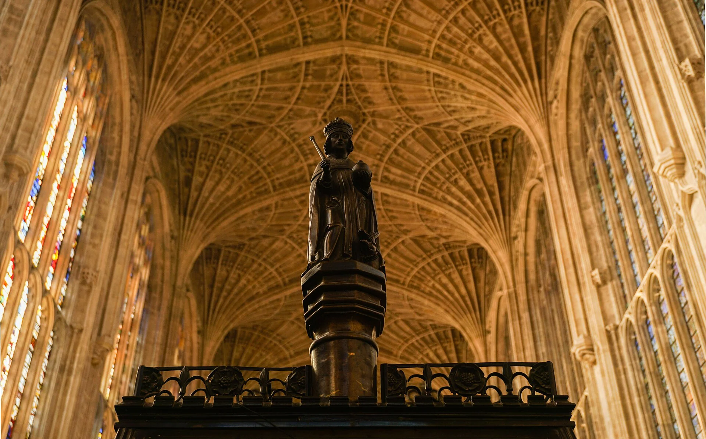
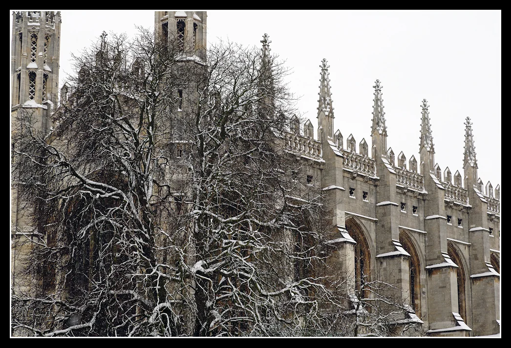

아직 펼치지 않은 카드
아직 펼치지 않은 카드
1918년 성탄 전야, 영국 케임브리지의 킹스 칼리지 예배당에서 처음 열린 예배가 백 년 넘게 이어지고 있어요. 해마다 오후 3시, 이 예배는 성가대 소년 한 명이 혼자 부르는 첫 절로 시작해요. 한 목소리에서 모두의 노래까지, 소리를 차례로 켜 보세요.
영국의 아주 큰 돌 예배당에서는 크리스마스이브 오후마다, 아이 한 명이 혼자 첫 노래를 불러. 그다음엔 성가대가, 그다음엔 모두가 함께 불러. 같이 들어 볼까?
검수 전 시안이에요(기준서 1판). 장면에는 기록에 있는 것만 옮겼어요. 소리는 킹스 칼리지 성가대의 녹음이 아니라, 옛 가락에 이 안내서가 화음을 붙여 컴퓨터로 연주한 소리예요. 상상은 ‘눈 감고 상상해 보기’에서만 해요.
1918년 11월 제1차 세계 대전이 휴전으로 멈추고 몇 주 뒤, 영국 케임브리지 대학의 킹스 칼리지 예배당에서 새 예배가 처음 열렸어요. 칼리지는 케임브리지 대학을 이루는 학교 공동체로, 학생들이 함께 살며 지내는 곳이에요. 새 예배의 이름은 ‘아홉 번의 성경 봉독과 캐럴 축제(A Festival of Nine Lessons and Carols)’예요. 봉독은 예배에서 성경을 소리 내어 읽는 일이에요.
예배를 짠 사람은 그해 예배당의 예배를 맡은 사제(딘, Dean)가 된 서른네 살의 에릭 밀너화이트(Eric Milner-White)였어요. 그는 전쟁 동안 군목으로 서부 전선과 이탈리아의 병사들 곁에 있었고, 그 경험으로 교회 예배가 더 상상력 있게 달라져야 한다고 생각했어요.
그는 1880년 영국 트루로(Truro)의 벤슨(Edward White Benson) 주교가 짠 순서를 빌려 왔어요. 트루로에서는 대성당을 짓는 동안, 성탄 전야 밤 10시에 나무로 지은 임시 건물에서 이 예배를 드렸어요. 벤슨의 아들은 그 예배를 “아홉 곡의 캐럴과 아홉 개의 아주 짧은 봉독”으로 기억했어요.
전쟁이 끝난 해 크리스마스이브에, 한 사제가 성경 이야기와 캐럴을 번갈아 들려주는 예배를 처음 열었어.
물어보기오랜만에 집에 돌아온 사람에게, 너는 어떤 노래를 불러 주고 싶어?
해마다 12월 24일 오후 3시, 예배당이 조용해지면 성가대 소년 한 명이 반주 없이 혼자 첫 절을 불러요. 찬송이자 캐럴인 「다윗 왕의 마을에(Once in Royal David's City)」예요. 1919년 순서를 고친 뒤로 이 예배는 늘 이 찬송으로 시작해요.
누가 부를지는 노래하기 바로 직전에야 정해요. 지휘자가 미리 준비시킨 소년들 가운데 한 명을 그 자리에서 가리켜요.
2절은 성가대가 오르간과 함께, 3절부터는 예배당의 모든 사람이 함께 불러요. 아래 소리를 1절부터 차례로 켜 보세요.

이 소리는 킹스 칼리지 성가대의 녹음이 아니에요. 1849년 헨리 존 건틀렛(Henry John Gauntlett)이 지은 가락에 이 안내서가 화음을 붙여, 노랫말 없이 컴퓨터로 연주한 소리예요.
노랫말은 1848년 세실 프랜시스 알렉산더(Cecil Frances Alexander)가 아이들을 위해 쓴 찬송시예요. 1절은 다윗의 마을 베들레헴의 외양간에서 마리아가 아기 예수를 구유(가축의 먹이를 담는 그릇)에 눕힌 이야기예요(누가복음 2장 4~7절).
조용한 예배당에서 아이 한 명이 혼자 첫 노래를 시작해. 누가 부를지는 바로 직전에 정한대!
물어보기1절, 2절, 3절을 차례로 들어 볼까? 소리가 어떻게 달라져?
첫 찬송이 끝나면 사제가 여는 기도를 드리고, 성경을 아홉 번 소리 내어 읽어요(봉독). 그 사이사이 캐럴을 불러요. 성경은 1611년 제임스 왕 때 나온 영어 번역 성경, 킹 제임스 역을 읽어요.
첫째 봉독은 에덴동산에서 하나님이 아담에게, 그의 후손이 뱀의 머리를 짓밟게 될 거라고 말씀하는 이야기예요(창세기 3장 8~19절). 마지막 아홉째는 “태초에 말씀이 계셨다”로 시작하는 요한복음 1장 1~14절이에요.
첫째는 성가대 소년이 읽고, 마지막은 칼리지 전체를 이끄는 대표인 학장(프로보스트, Provost)이 읽어요. 사이에는 학생, 케임브리지 시장 같은 이들이 차례로 읽어요.
1983년부터는 해마다 작곡가에게 새 캐럴을 부탁해, 이 예배에서 처음 불러요.
예배당은 1446년부터 1515년까지 여러 왕을 거치며 지었어요. 부채를 펼친 듯한 돌 천장은 1512~1515년에 석공 존 워스텔(John Wastell)이 만들었는데, 이런 천장으로는 세계에서 가장 커요. 양옆에 열둘씩, 동쪽과 서쪽 끝에 하나씩 있는 큰 유리창은 1531년까지 채웠어요.
성경 이야기를 아홉 번 읽어. 처음은 성가대 아이가, 마지막은 학교의 제일 높은 어른이 읽어.
물어보기해마다 새 캐럴을 하나 만든다면, 올해 노래는 무엇에 대한 노래면 좋을까?
1928년, BBC 라디오가 이 예배를 처음 중계했어요. 그 뒤로 1930년 한 해를 빼고 해마다 방송했어요. 1932년부터는 바다 건너 다른 나라로 가는 방송에도 실렸어요.
제2차 세계 대전 때에도 방송은 이어졌어요. 옛 유리창은 떼어 내 안전한 곳에 두었고, 예배당에는 난방도 없었어요. 안전 때문에 방송에서는 ‘킹스’라는 이름도 말하지 않았어요.
지금은 세계에서 수백만 명이 이 예배를 들어요. 케임브리지의 오후 3시는 한국 시간으로 성탄절 0시예요.

2026년에도 12월 24일 오후 3시, 예배당이 조용해지면 바로 직전에 뽑힌 소년 한 명이 첫 절을 혼자 불러요.
성탄 전야, 이 첫 소리를 어디에서 듣고 싶나요?
전쟁 중에도 라디오로 이 노래가 나왔대. 대신 어디서 하는지는 비밀로 했어!
물어보기멀리 있는 누군가에게 노래를 보낸다면, 누구에게 들려주고 싶어?
눈 감고 상상해 보기
성탄 전야 오후, 오래된 돌 예배당. 촛불이 줄지어 흔들리고, 높은 유리창에 겨울 햇빛이 조금 남아 있어요. 기침 소리마저 멎은 고요 속에 작은 숨소리 하나가 들리고, 한 목소리가 부채꼴 돌 천장까지 올라가요.
눈을 감아 봐. 아주 크고 조용한 돌 예배당이야. 촛불이 반짝여. 아이 한 명이 숨을 쉬고, 노래를 시작해.
수백만 명이 기다리는 첫 소리는 아이 한 명의 목소리예요. 내 성탄을 여는 첫 소리는 누구의 목소리인가요?
크리스마스에 제일 먼저 듣고 싶은 목소리는 누구 목소리야?
마음에 닿는 한 줄을 고르거나 직접 써 보세요. 한 줄을 남기면 이 자리의 도장이 찍혀요. 이 기기에만 저장돼요.
이야기를 보다 궁금해질 만한 것들이에요. 답을 읽거나 짧은 영화로 보세요.
아직 펼치지 않은 이야기예요. 누르면 이야기가 펼쳐지고 색이 돌아와요. 더 알고 싶으면 근거를 따라가 보세요.
다 펼치면, 다음에 오실 때 새 이야기가 찾아와요.
오늘의 뒷이야기는 여기까지예요. 다음에 오시면 새 이야기가 기다리고 있어요.
펼친 뒷이야기 · 누르면 다시 볼 수 있어요
첫해의 첫 찬송 1918년 첫 예배는 「다윗 왕의 마을에」가 아니라 「일어나라, 착한 그리스도인들아(Up! Good Christen folk)」로 시작했어요. 1919년 순서를 고친 뒤 지금의 첫 찬송이 자리 잡았어요.
바다 건너 방송 학교 누리집은 1932년부터라고 하고, 2008년 예배 순서지는 ‘1930년대 초 어느 때’라고 적었어요. 1936년 BBC 제국 방송부터로 쓴 글도 있어요.
노래할 소년은 언제 알까 “몇 초 전”이라는 기사도 있고, 리허설에서 미리 몇 명을 골라 둔다는 이야기도 있어요. 마지막 순간에 한 명을 가리킨다는 점은 같아요.
첫 절 독창은 언제부터 1919년부터 이 예배가 늘 「다윗 왕의 마을에」로 시작했다는 점은 학교 기록이 같아요. 그런데 첫 절을 소년 혼자 부르는 방식은 1919년부터였다고 쓴 글(영어 위키백과)도 있고, 1935년에 시작했다고 보는 강연(그레셤 칼리지, 2020)도 있어요.
확인한 날 · 2026년 11월 18일 · 바뀌기 쉬운 정보라 정기적으로 다시 확인해요
이 예배는 영국 시간 성탄 전야 오후 3시(한국 시간 25일 0시)에 BBC 라디오 4로 방송해 왔어요. 텔레비전의 「캐럴스 프롬 킹스(Carols from King’s)」는 따로 미리 녹화한 프로그램이에요.
예배당에 들어가는 방법은 해마다 달라질 수 있어요(오랫동안 줄을 섰고, 공개 추첨을 한 해도 있어요). 다녀가기 전에 킹스 칼리지 누리집에서 확인해 주세요.
‘오후 3시, 첫 소리’에서 소리를 차례로 켜 3절 ‘모두 함께’까지 들으면 카드에 금박이 입혀져요.
이 첫 소리를 어디에서 들을지 골라 보세요. 둘 가운데 하나만 해도 카드가 채색돼요.
‘처음 만나는 기독교 문화’의 깊은 카드예요. 소리는 이 안내서가 만든 컴퓨터 연주예요. 카드 단계와 남긴 글은 이 기기에만 저장돼요.
영화처럼 보기 · 약 3분
화면을 누르거나 → 키를 누르면 넘어가요. 그냥 두어도 자막이 저절로 넘어가요.